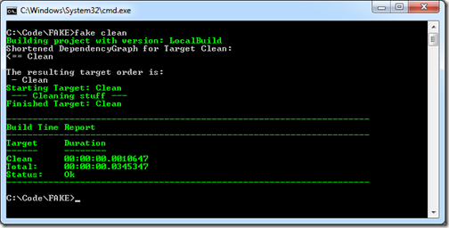

FAKE Command Line
Note: This documentation is for FAKE.exe version 2.18 or later.
The FAKE.exe command line interface (CLI) is defined as follows:
fake.exe [<buildScriptPath>] [<targetName>] [options]
Basic Examples
No arguments: fake.exe (FAKE will try and locate your build script).
Specify build script only: fake.exe mybuildscript.fsx
Specify target name only: fake.exe clean (runs the clean target).
Specify build script and target: fake.exe mybuildscript.fsx clean
buildScriptPath
Optional. The path to your .fsx build file. If not specified, FAKE will pick the first .fsx it finds in your working directory (and fail if none exist).
targetName
Optional. The name of the build script target you wish to run. This will any target you specified to run in the build script.
Options
Options begin with -- (long name) or - (short name).
--envvar [-ev] <name:string> <value:string>
Set environment variable name value pair. Supports multiple.
--envflag [-ef] <name:string>
Set environment variable flag name to 'true'. Supports multiple.
--logfile [-lf] <path:string>
Set the build output log file path.
--printdetails [-pd]
Print details of FAKE's activity.
--version [-v]
Print FAKE version information.
--fsiargs [-fa] <string>
Pass args after this switch to FSI when running the build script. This consumes all arguments after it. See F# Interactive Options for the fsi CLI details.
Important: If you use this option, you must include your build script path as one of the fsi args. For example:
--fsiargs --debug+ buildscript.fsx someArg1 anotherArg2
The entire argument string following the build script path is set as the value of an environment variable named fsiargs-buildscriptargs. This means you can access this specific set of arguments from within your build script.
--boot [-b] <string>
Bootstrap your FAKE script. A bootstrapping build.fsx script executes twice (in two stages), allowing you to download dependencies with NuGet and do other preparatory work in the first stage, and have these dependencies available in the second stage.
--help [-h|/h|/help|/?]
Display CLI help.
Running FAKE targets from the command line
For this short sample we assume you have the latest version of FAKE in ./tools/. Now consider the following small FAKE script:
1: 2: 3: 4: 5: 6: 7: 8: 9: 10: 11: 12: 13: 14: 15: |
|
If you are on windows then create this small redirect script:
1: 2: 3: |
|
On mono you can use:
1: 2: |
|
Now you can run FAKE targets easily from the command line:
